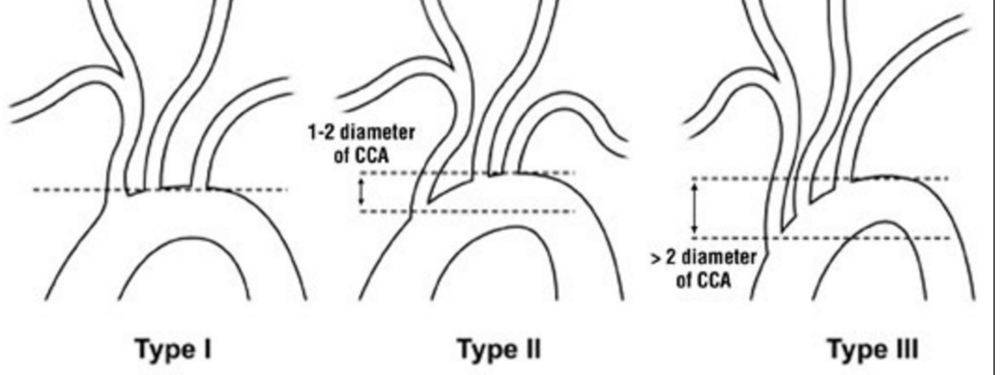
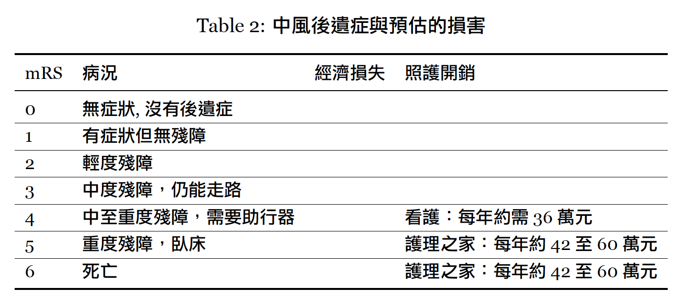
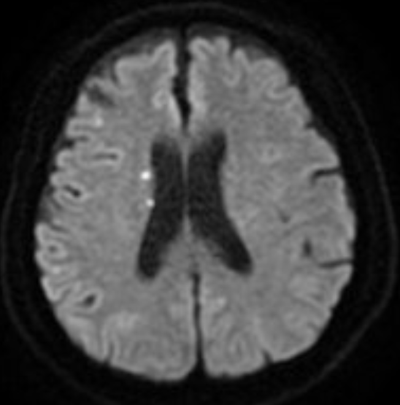

TSVS 頸動脈支架臨床訓練課程 · 2026-11-14
Managing Risks
and Complications
in Carotid Procedures
and Complications
in Carotid Procedures
頸動脈介入的風險管理與併發症處理：先預防、早辨識、快處置
謝慕揚Mu-Yang Hsieh, MD, PhD, FESC
新竹臺大分院 心臟血管科 ｜ 集思台中烏日會議中心
影片與影像均為講者病例（另註明者除外）；本課程僅供醫療專業人員教學使用
ROADMAP
今天的路線圖
數字 → 術前 → 術中 → 術後 24 小時 → 制度
基礎 → 進階
1風險全貌
- 數字與時間軸
- Minor vs Major
約 4 分
2術前管理
- 病人、解剖、藥物
- 溝通與團隊
約 6 分
3術中
- 血流動力學、spasm、dissection
- 栓塞救援
約 11 分
4術後
- Hyperperfusion／ICH
- Stent thrombosis、入路
約 6 分
5系統
查核表、救援準備、Take Home · 約 3 分基礎 外科入門：先會認、會停
進階 中階以上：救援與決策
PART 1 · 風險全貌
併發症有多常見，
什麼時候發生
Trial 與登錄的數字 → 時間軸 → Minor 與 Major
約 4 分鐘
01
NUMBERS · RCT
先看數字：隨機試驗
CAS vs CEA in randomised trials
基礎 Basic
ACST-2（2021，n = 3,625）
無症狀，CAS vs CEA
- 30 天失能中風／死亡：兩組約 1%
- 非失能中風 2.7% vs 1.6%
CREST（2010／2016）
有症狀 + 無症狀，CAS vs CEA
- 圍術期中風 4.1% vs 2.3%
- 心肌梗塞 1.1% vs 2.3%
- 10 年結果相當
Halliday A, et al. Lancet 2021;398:1065-1073. Brott TG, et al. N Engl J Med 2010;363:11-23; 2016;374:1021-1031.
NUMBERS · REGISTRY
先看數字：真實世界登錄
Nationwide and VQI registries
基礎 Basic
日本全國登錄（2024，n = 9,792）
99% 用 EPD，專科醫師執行
- 30 天中風／死亡：有症狀 2.2%、無症狀 1.5%
- ICH 0.9% vs 0.2%
VQI（2019，配對 3,286 對）
tfCAS vs TCAR
- 院內中風／死亡 3.1% vs 1.6%
- 1 年同側 9.6% vs 5.1%
好手的 CAS：30 天 stroke/death 約 1.5–3%，一半以上發生在術中與術後 24 小時內
Uchida K, et al. JACC Cardiovasc Interv 2024;17:1148-1159. Schermerhorn ML, et al. JAMA 2019;322:2313-2322.
TIMELINE
併發症的時間軸
When it happens decides who is watching
基礎 Basic
術中
- Brady／低血壓
- 栓塞
- No-reflow
- Spasm、dissection
0–24 小時
- Hyperperfusion
- ICH 0.3–2.7%
- Stent thrombosis
- 入路出血
1–30 天
- 延遲 TIA／stroke
- MI（CREST 1.1%）
- 停 DAPT 後血栓
> 30 天
- Restenosis
- 支架斷裂（罕見）
術中看術者 ｜ 24 小時內看 CCU ｜ 之後看 DAPT 與超音波
Huibers AE, et al. Eur J Vasc Endovasc Surg 2018;56:322-333. Uchida K, et al. JACC Cardiovasc Interv 2024. 講者 2024-04 新竹教學投影片。
CLASSIFICATION
Minor 與 Major：先會分類
Classification used in my teaching since 2016
基礎 Basic
A · Minor（多半可逆）
- Spasm
- 持續低血壓／bradycardia
- 非 flow-limiting dissection
- Contrast encephalopathy
- TIA
B · Major（會留後遺症）
- Major embolic stroke
- ICH、hyperperfusion
- Perforation（very rare）
- Acute stent thrombosis
- 入路大出血
PRINCIPLES
處理併發症的四條原則
2024 teaching slides, s50
基礎 Basic
1Prevention at all cost
2Work-flow 練到熟、練到準
3Rapid recognition and response
4容錯空間極小
頸動脈會把每個錯誤放到最大
PART 2 · 術前管理
把風險
在術前拿掉一半
病人、解剖、藥物、溝通
約 6 分鐘
02
RED FLAGS · PATIENT
病人層面的紅旗（1/2）
Who will bleed, drop the pressure, or hyperperfuse
基礎 Basic
| 紅旗 | 會發生什麼 | 怎麼處理 |
|---|---|---|
| ≥ 90%、側枝差 | HICH 3.1%；≥ 90% OR 13.6 | 壓低 SBP、MoMa 控流、ICU |
| 剛打過 tPA | Stroke/death 14.9%、ICH 5.5% | 能等就等；延後 DAPT |
| 心衰竭、高齡 | Hemodynamic depression（RR 2.4） | 備 atropine、升壓藥 |
Xu S, et al. World Neurosurg 2021;155:e353-e361. Kakkos SK, et al. EJVES 2021;62:340-349. Altinbas A, et al. Int J Stroke 2014;9:284-290（ICSS）.
RED FLAGS · PATIENT
病人層面的紅旗（2/2）
Poor cerebral reserve, bilateral disease, CKD, cardiac disease
基礎 Basic
| 紅旗 | 會發生什麼 | 怎麼處理 |
|---|---|---|
| 對側 ICA 閉塞 | 缺血耐受低、易 hyperperfusion | 縮短 flow suspension |
| 雙側病變、CKD | 對比劑、圍術期 MI | 分期；水化；心臟科評估 |
紅旗不是禁忌：術前就把對策寫進計畫
Huibers AE, et al. EJVES 2018;56:322-333（CVR 受損 RR 5.2）.
RED FLAGS · ANATOMY
解剖層面的紅旗：弓型
Read the arch on CTA before the first catheter
基礎 Basic


- Type III 弓、bovine arch
- 導管在弓內越久，弓上斑塊越容易被刮下
- CIRSE 2024：Type III + 重度鈣化 = tfCAS 禁忌
Spiliopoulos S, et al. CIRSE 2024;47:705-716. 弓型變異圖：方修御醫師 2024 課程（neuroangio.org）。
RED FLAGS · ANATOMY
解剖層面的紅旗：斑塊與血管
Arch, plaque and vessel decide the route
基礎 Basic
| 解剖 | 風險 | 對策 |
|---|---|---|
| Type III／bovine | 弓上栓塞、GC 卡住 | TRA、TCAR；不硬上 |
| 環形鈣化 | Stroke/death OR 1.9 | CEA 優先；TCAR |
| 血栓、string sign | Wiring、filter 時栓塞 | Proximal／雙重保護 |
| ICA 迂曲、kink | Spasm、dissection | Open-cell 或 CEA |
| 放射後長段 | Cheese-cutting 栓塞 | 少後擴、dual-layer |
Mota L, et al. J Vasc Surg 2024;79:305-315 (VQI). Spiliopoulos S, et al. CIRSE 2024;47:705-716.
MEDICATION
藥物：術前就決定了一半
tfCAS in-hospital stroke/death by antiplatelet regimen (VQI, n = 18,570)
基礎 Basic
2.2%
DAPT
4.1%
只吃 aspirin
6.8%
完全沒有抗血小板
新竹常規
- Aspirin 100 + Clopidogrel 75 ≥ 7 天，當天 reloading
- Atorvastatin 40 mg
- Heparin 3000 U → ACT 250–300
- Atropine 0.5–1.0 mg：後擴張前
- Perdipine、Levophed 都備在桌上
Marcaccio CL, et al. J Vasc Surg 2023;77:1434-1446（VQI 2016–2021）.
MEDICATION
要三思的藥、沒吃到的藥
GP IIb/IIIa, thrombolysis, ticagrelor, missed clopidogrel
基礎 Basic
要三思的藥
- GP IIb/IIIa：stroke/death OR 1.77、ICH OR 2.13
- tPA 後 6 小時再 CT，陰性才 load DAPT
- Ticagrelor：有 protamine 才與 clopidogrel 相當
Clopidogrel 沒吃到
- 確認病房真的有吃
- 沒吃：延期，或 600 mg loading 後等 ≥ 6 小時
- P2Y12 單用 ≈ DAPT；aspirin 單用不行
Locham S, et al. Ann Vasc Surg 2024;103:151-158. Marcaccio CL, et al. J Vasc Surg 2022;75:1293-1303（ticagrelor）.
COMMUNICATION
溝通與同意：家屬
Good communication is a basic procedure
◇ 20 分鐘版可略基礎

中風後遺症與預估損害（mRS）：術前就讓家屬看到這張表
家屬
- 全家一起聽；畫圖、講經濟面
- 中風 2–4%、出血 1%
- 當天到場；簽 OP + ICU 同意書
COMMUNICATION
溝通：神經內科與神經外科
Who takes the stroke, who opens the bleed
◇ 20 分鐘版可略基礎
神經內科
- Baseline NIHSS、共同判讀影像
- 術後中風誰接手，先講好
神經外科
- 術前一小時確認值班
- CAS 失敗，CEA 可行嗎？
我的第一例高風險手術前：回顧所有併發症、備好救援器材、跟神經內外科講好
PART 3 · 術中併發症
辨識與處置：
影片都在這一段
栓塞、血流動力學、spasm、dissection、no-reflow、filter、air
約 11 分鐘
03
EMBOLIZATION
栓塞的四個高風險步驟：怎麼防
Critical steps with the highest risk of distal embolization
基礎 Basic
1Engage
- GC 刮下弓上斑塊
- LAO 60°、小角度轉
2Wiring
- Wire 刮下斑塊、血栓
- 血栓多先 proximal
3Pre-dilate
- 碎屑衝破濾網
- 小球囊漸進
4Post-dilate
- 斑塊從網孔擠出
- 6–8 atm，殘餘 20–30%
造影、交換器材、收傘也會出事：只要工具在動，就有碎屑在動
整理自 2025 新竹教學投影片；CAS 2026 學員模組 Ch4（後擴張 6–8 atm）。
HEMODYNAMICS
Bradycardia 與 Hypotension
Carotid sinus stimulation: expected, usually benign
基礎 Basic
13.8%
CAS hemodynamic depression（ICSS）
25%
持續 > 24 小時（單中心）
52%
術後任何低血壓（VQI 單中心）
預測因子
- 病灶在 bulb、鈣化重
- Pre-dilate 5 mm 或 > 7 atm
- 心衰竭（RR 2.4）、全身麻醉
- 持續 > 24 小時 → TIA 增加
Altinbas A, et al. Int J Stroke 2014;9:284-290. Li B, et al. Vascular 2023;31:892-901. Chen AX, et al. Ann Vasc Surg 2026;133:223-228.
HEMODYNAMICS
處置，以及 atropine 的另一面
Hsinchu practice; central anticholinergic syndrome
基礎 Basic
處置（新竹）
- 後擴張前 atropine 0.5–1.0 mg IV
- 暫停 Perdipine；N/S 加壓
- Norepinephrine 50 µg IA
- 持續低血壓：infusion，進 ICU
Atropine 的另一面
- 長者：delirium、尿滯留
- 0.25 mg 就可能出事
- 躁動、雙側瞳孔放大 → 先想到藥
Baek JH. Neurointervention 2026.
SPASM
Spasm：等一下，不要追
Filter wire motion and tortuous ICA
基礎 Basic
處置
- NTG 100–400 µg 經 GC 緩推
- 等 3–5 分鐘再造影
- 不再送器材去撐
- Spasm 會動、會好
血壓低時，先升壓再給 NTG
DISSECTION
Dissection：來源與處理
Rare and operator-made
進階 Advanced
四個來源
- ICA 嚴重彎折、kink
- Wire、球囊、支架太用力
- 後擴到支架遠端以外
- Sheath tip 在 CCA 內猛操作
怎麼辦
- Wire 不退，保住真腔
- Flow-limiting、遠端 flap → 第二支支架
- 非 flow-limiting → DAPT 觀察
- 兩個角度看，別被 spasm 騙
講者 2024 教學投影片 s19（dissection 來源）.
DISSECTION · PERFORATION
CCA 開口夾層與 Perforation
Iatrogenic CCA ostium dissection; perforation (very rare)
進階 Advanced
CCA ostium dissection
- 診斷導管（Simmons、JR4）頂出來
- 無症狀：DAPT 觀察
- Flow-limiting：支架覆蓋
Perforation
- 球囊低壓 tamponade
- Protamine 中和 heparin
- Covered stent；頸部可外科止血
Biondi-Soares LG, et al. Surg Neurol Int 2025;16:436（CCA ostium iatrogenic dissection 系統性回顧）.
EMBOLIZATION · RESCUE
弓上斑塊栓塞與救援
Shaking aortic plaque → MCA M1 occlusion → aspiration · video courtesy of Dr. Sheng-Fu Liu
進階 Advanced
辨識
新神經學變化 → 立刻顱內 DSA
救援
抽吸導管或 stent retriever
NO-REFLOW
No-reflow：不收傘、先抽吸
66 y/o man, vulnerable plaque; Lt arm power 0 during no-reflow, recovered to 4/5
基礎 Basic

Atropine、升壓 → 抽吸 → 顱內 DSA → 最後才收傘
POST-RADIATION
放射後狹窄：Cheese-cutting
Long WallStent and post-dilatation, then major embolization
進階 Advanced
少後擴、小球囊、proximal protection、考慮 dual-layer
FILTER
Filter 本身的問題
Not a complication itself, but the start of aggressive manipulation
◇ 20 分鐘版可略基礎
四種狀況
- 傘滿 → 先抽吸
- 收傘卡住 → 轉頭、壓迫，不硬拉
- Jailed wire → 不後擴到 wire
- 走不過 → Spider／V18
講者 2024 教學投影片 s47「Filter retrieval difficulty」；2025 s16、s21。
AIR · THROMBUS
Air 與管路血栓：看不見的栓子
No stent or EPD prevents these; only the workflow does
◇ 20 分鐘版可略基礎
Air
- 支架倒吸空氣
- 5-way 持續 flush
- 接管先回抽
管路血栓
- 側孔加壓 flush
- ACT 每 30 分
- 定時回抽棄血
針筒尖端
- 回抽的血不回打
- 對比劑與 N/S 分開
- 看到血就換
AIR · THROMBUS
發生了怎麼辦
Air embolism and line thrombus
◇ 20 分鐘版可略基礎
- Air：100% O2、抬高血壓、能抽就抽；多半小量、可逆
- 血栓：heparin 補到 ACT；抽吸；顱內 DSA 看分支
回頭檢查流程，當天就改
NEW DEFICIT
術中神經學變化：先看三樣
A new deficit on the table: 90 seconds to decide
進階 Advanced
1Monitor
- SBP、HR、SpO2
- 低血壓先升壓
- 慢就給 atropine
2病人
- 表情、瞳孔
- 握手、說話
- 本來就每 15 分看
3造影
- 頸部 + 顱內 DSA
- 兩個角度
- 比對 baseline
NEW DEFICIT
造影之後：四條路
Occlusion, hyperperfusion/ICH, hemodynamic, stroke mimic
進階 Advanced
血管閉塞
抽吸／stent retriever；filter 還在先抽
通暢 + 血壓高、頭痛／癲癇
Protamine、降壓、立刻 CT、通知 NS
通暢 + 血壓低
水、升壓藥；多隨血壓回來
通暢 + 意識／視覺異常
Contrast、atropine：排除中風後支持
整理自講者 2024 併發症教學與新竹 CCU 流程；Karzoun A, et al. JACC Case Rep 2026;31:107054.
PART 4 · 術後併發症
術後 24 小時：
血壓與神經學
Hyperperfusion／ICH、stent thrombosis、入路、其他
約 6 分鐘
04
HYPERPERFUSION
Hyperperfusion 與 ICH
Most frequent cause of death after CAS, and the most preventable
基礎 Basic
4.6%
CAS 後 CHS（pooled）
47%
CHS 病人發生中風；54% 致死或失能
12 h
中位發病時間（IQR 8–36 h）
危險因子與表現
- ≥ 90%、側枝差、CVR 受損（RR 5.2）
- 同側頭痛、血壓飆高、癲癇、意識改變
- TCAR 少一半：0.53% vs 1.1%
Huibers AE, et al. EJVES 2018;56:322-333. Chow CY, et al. Ann Vasc Surg 2025;113:112-119 (VQI, n = 69,480).
HYPERPERFUSION
Hyperperfusion：預防與處理
Hsinchu post-CAS CCU orders
基礎 Basic
預防
- 術中 SBP 140–160
- 支架後立刻回開 Perdipine
- 術後 SBP 在基準 ±10%
- 高風險：MoMa 控流、分期
發生了
- GCS 掉 > 2 分 → 立刻 CT
- ICH：protamine、積極降壓
- 抗血小板與 NS 一起決定
- 癲癇：benzodiazepine
STENT THROMBOSIS
Acute Stent Thrombosis
Rare (0.4–0.8%), almost always explainable, a true emergency
進階 Advanced
0.8%
有症狀病人 in-stent occlusion
0.4%
無症狀病人
× 2.3
沒有抗血小板的 stroke/death RR
為什麼會 thrombosis
- 抗血小板沒吃到、無效
- Flap、貼壁不良、under-expansion
- 術後持續低血壓
- 急性中風：血栓多、未 load
Uchida K, et al. JACC Cardiovasc Interv 2024;17:1148-1159. Marcaccio CL, et al. J Vasc Surg 2023;77:1434-1446.
STENT THROMBOSIS
Stent Thrombosis：預防與處理
Prevention and bail-out
進階 Advanced
預防
- 確認 DAPT 有吃；當天 reloading
- 支架頭尾落在正常段
- Flap 就蓋掉
- 避免術後 SBP < 100
發生了
- 立刻回導管室：抽吸、stent retriever
- GP IIb/IIIa：無 ICH 且必要時
- 確認血小板反應，考慮換 P2Y12
Locham S, et al. Ann Vasc Surg 2024;103:151-158.
ACCESS SITE
入路併發症：外科醫師最熟
Femoral, radial and carotid access bleed differently
基礎 Basic
| 入路 | 常見併發症 | 數字 |
|---|---|---|
| 股動脈 | 血腫、假性動脈瘤、腹膜後出血 | 入路介入 0.8% |
| 橈／肱 | 橈動脈閉塞、前臂血腫 | 閉塞 2%、血腫 1% |
| TCAR | 頸部血腫、顱神經傷害 | 需介入 1.3% |
Schermerhorn ML, et al. JAMA 2019;322:2313-2322. Batista S, et al. Neuroradiol J 2024;37:546-555. Ma P, et al. BMC Neurol 2024;24:231.
ACCESS SITE
入路：怎麼預防
Hemostasis is part of neuroprotection
基礎 Basic
- 股動脈：超音波導引穿刺、closure device、平躺 6 小時
- 橈動脈：spasmolytic、親水長鞘；wire 不盲推
- TCAR：常規 protamine，出血 8.3% → 2.8%
出血 → 低血壓 → stent thrombosis；輸血又停掉 DAPT
Liang P, et al. J Vasc Surg 2020;72:2079-2087.
OTHERS
少見但要認得（1/2）
Contrast-induced encephalopathy, myocardial infarction
◇ 20 分鐘版可略基礎
Contrast encephalopathy
- 皮質盲、失語、偏癱
- 24–48 小時可逆
- 曾發生者會再發
圍術期 MI
- CREST：CAS 1.1% vs CEA 2.3%
- 與 10 年死亡率相關
- 術前心臟評估
Karzoun A, et al. JACC Case Rep 2026;31:107054. Brott TG, et al. N Engl J Med 2010. Jones MR, et al. Circ Cardiovasc Qual Outcomes 2018;11:e004663.
OTHERS
少見但要認得（2/2）
Seizure, cranial nerve injury, restenosis
◇ 20 分鐘版可略基礎
癲癇
- 多半是 hyperperfusion 或 ICH
- 立刻 CT；benzodiazepine
- 別當單純癲癇處理
CNI／再狹窄
- CNI：CEA、TCAR 切口相關
- 超音波 6 個月、1 年、每年
- > 70% 再評估
講者 2024 s214（追蹤間隔）.
CCU · 24 H
術後 24 小時：CCU 的工作
Blood pressure, hourly neurology, antiplatelet plan
基礎 Basic
血壓
- SBP 在基準 ±10%
- 低：N/S + Levophed
- 高：Perdipine
神經學
- 每小時 GCS、肌力
- GCS 掉 > 2 → CT
- 頭痛 + 血壓高 = CHS
藥物
- DAPT ≥ 1 個月
- Statin 終身
- 寫好誰追蹤
新竹術後 CCU 醫囑（2024 s213）. Kishi M, et al. J Stroke Cerebrovasc Dis 2025;34:108452. ESVS 2023 Guidelines.
PART 5 · 系統
把流程
變成制度
查核表、救援準備、Take Home
約 3 分鐘
05
CHECKLIST
新竹工作查核表
每一項都來自某個病人的併發症
基礎 Basic
| 項目 | 內容 | 誰確認 |
|---|---|---|
| 術前藥物 | Aspirin + Clopidogrel + Statin | 病房 NP |
| 器材 | Sheath／EPD／stent；救援器材 | 導管室書記 |
| NS 與 Neuro | 治療前 1 小時確認值班 | 病房 NP |
| 血壓 | Perdipine 或 Levophed；SBP 140–160 | 1st assistant |
| Heparin | 3000 U → ACT 250–300 | Pruka 人員 |
| 保護裝置 | 單套或雙套？ | 術者 |
| 支架前後 | Flush；atropine；Perdipine | 1st assistant |
| 神經學 | 每 15 分鐘表情與瞳孔 | Pruka 人員 |
| 術後 | 進 ICU；SBP 目標寫進醫囑 | CCU NP |
PREPARATION
救援準備：人、器材、路線
Before the first case, not during it
◇ 20 分鐘版可略進階
自己
- 回顧所有併發症
- PCI、PAOD、CCU 經驗
團隊
- 導管室教學
- 各自的查核項
器材
- 抽吸、retriever
- 急救藥抽好
沒有取栓能力：術前就要知道誰來、多久到、怎麼送
講者 2024 教學投影片 s215「How did I start my first high-risk procedure」。
TAKE HOME
Take Home Message
Prevention, recognition, response
基礎 → 進階
講者的四句話
- Prevention at all cost
- 台上每個錯誤都無法遮掩
- 三步看完、九十秒決定
- Success depends not only on skills but also on character
入門：先做到
- 會分 minor／major
- 會認紅旗
- 做完一定進 ICU
進階：再長出
- 栓塞救援
- Dissection 決策
- 雙重保護
REFERENCES
參考文獻（1/2）
- 1. Halliday A, et al. Second asymptomatic carotid surgery trial (ACST-2). Lancet 2021;398(10305):1065-1073. doi:10.1016/S0140-6736(21)01910-3
- 2. Brott TG, et al. Stenting versus endarterectomy for carotid-artery stenosis (CREST). N Engl J Med 2010;363(1):11-23. doi:10.1056/NEJMoa0912321 ｜ Long-term results. N Engl J Med 2016;374(11):1021-1031. doi:10.1056/NEJMoa1505215
- 3. Uchida K, et al. Real-world outcomes of CAS in symptomatic and asymptomatic patients. JACC Cardiovasc Interv 2024;17(9):1148-1159. doi:10.1016/j.jcin.2024.03.014
- 4. Schermerhorn ML, et al. TCAR vs transfemoral CAS (VQI). JAMA 2019;322(23):2313-2322. doi:10.1001/jama.2019.18441
- 5. Altinbas A, et al. Hemodynamic complications in the International Carotid Stenting Study. Int J Stroke 2014;9(3):284-290. doi:10.1111/ijs.12089
- 6. Huibers AE, et al. Cerebral hyperperfusion syndrome after CAS: systematic review and meta-analysis. Eur J Vasc Endovasc Surg 2018;56(3):322-333. doi:10.1016/j.ejvs.2018.05.012
- 7. Xu S, et al. Intracranial hemorrhage following CAS for symptomatic severe carotid stenosis. World Neurosurg 2021;155:e353-e361. doi:10.1016/j.wneu.2021.08.063
- 8. Chow CY, et al. Cerebral hyperperfusion syndrome: TCAR vs CAS with distal embolic protection (VQI). Ann Vasc Surg 2025;113:112-119. doi:10.1016/j.avsg.2024.12.064
- 9. Marcaccio CL, et al. Single versus dual antiplatelet therapy in CAS (VQI). J Vasc Surg 2023;77(5):1434-1446. doi:10.1016/j.jvs.2022.12.034
REFERENCES
參考文獻（2/2）
- 10. Locham S, et al. Glycoprotein IIb-IIIa inhibitors in CAS (VQI). Ann Vasc Surg 2024;103:151-158. doi:10.1016/j.avsg.2023.07.097
- 11. Kakkos SK, et al. Peri-procedural outcomes of carotid interventions following thrombolysis: meta-analysis. Eur J Vasc Endovasc Surg 2021;62(3):340-349. doi:10.1016/j.ejvs.2021.06.003
- 12. Li B, et al. Long-period hemodynamic instability after CAS. Vascular 2023;31(5):892-901. doi:10.1177/17085381221091369
- 13. Mota L, et al. Stroke or death and carotid lesion calcification in CAS (VQI). J Vasc Surg 2024;79(2):305-315. doi:10.1016/j.jvs.2023.10.046
- 14. Kishi M, et al. 3-month dual antiplatelet therapy after CAS. J Stroke Cerebrovasc Dis 2025;34(11):108452. doi:10.1016/j.jstrokecerebrovasdis.2025.108452
- 15. Liang P, et al. Protamine use in TCAR (VQI). J Vasc Surg 2020;72(6):2079-2087. doi:10.1016/j.jvs.2020.02.019
- 16. Baek JH. Atropine-associated central anticholinergic syndrome during CAS. Neurointervention 2026. doi:10.5469/neuroint.2026.01158 ｜ Karzoun A, et al. Recurrent transient cortical blindness after bilateral CAS. JACC Case Rep 2026;31(11):107054. doi:10.1016/j.jaccas.2026.107054
- 17. Biondi-Soares LG, et al. Left CCA ostium iatrogenic dissection. Surg Neurol Int 2025;16:436. doi:10.25259/SNI_464_2025 ｜ Ma P, et al. Mediastinal hematoma after trans-radial cerebral angiography. BMC Neurol 2024;24:231. doi:10.1186/s12883-024-03714-z
- 18. Naylor R, et al. ESVS 2023 Clinical Practice Guidelines on Atherosclerotic Carotid and Vertebral Artery Disease. Eur J Vasc Endovasc Surg 2023;65(1):7-111. doi:10.1016/j.ejvs.2022.04.011 ｜ Spiliopoulos S, et al. CIRSE Standards of Practice on CAS. Cardiovasc Intervent Radiol 2024;47:705-716. doi:10.1007/s00270-024-03707-y
- 素材：謝慕揚 2016–2025 新竹臺大分院教學投影片與病例影片（2016 Complications During Carotid Stenting、2024-04-13 Carotid stenosis teaching、2025-06 Basic procedures）；劉聖甫醫師（shaking aortic plaque 影片）；方修御醫師 2024 TSCI 課程講義。
Q & A
謝謝聆聽
Prevention at all cost. Rapid recognition and response.
謝慕揚Mu-Yang Hsieh, MD, PhD, FESC
新竹臺大分院 心臟血管科 ｜ drake1128@gmail.com
謝慕揚 ｜ TSVS 頸動脈支架臨床訓練課程 ｜ Managing Risks and Complications
20 分鐘版：略過 ◇ 頁